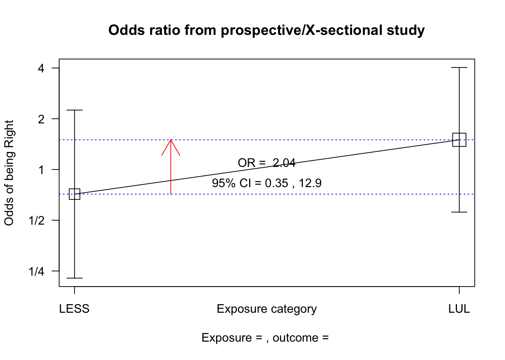
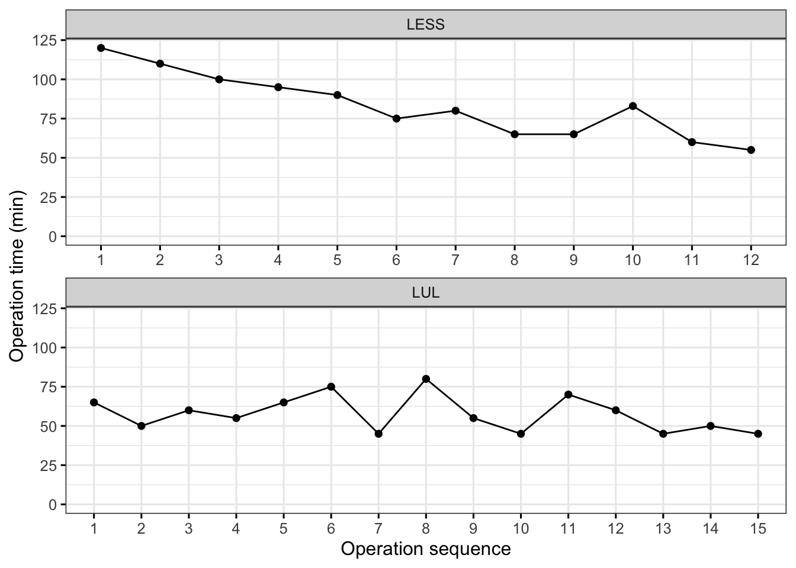

原始临床数据表
以前的论文结果是用SPSS计算的，很方便，本部分内容尝试由R语言生成，原始数据在知网和万网上都可以看到，这里的原始数据用R语言的DT包显示，可以拉动显示数据。
数据总结
使用R语言的epiDisplay包的summ(data)函数可以很快的显示均数，标准差，最大值和最小值，注意，这里是所有的患者，没有算上分组，还有就是location（结石部位）只有左和右，属于因子，只统计数字即可，但是这个包当成数值计算了,用自带的summary(data)函数可以统计因子的个数，但是又不能计算标准差，还有一个psych的describe(data)函数也很优秀，当然还有很多包都可以一次性统计所有结果，怎么都比SPSS要好得多。
这里吐槽一下自己的硕士论文，结果一中的研究对象里面，我把A（单孔腹腔镜组）和B（标准腹腔镜）两组的年龄、BMI和结石大小数据搞反了，不过统计结果是正确的，毕竟我是正正规规用SPSS做的结果，不是那种瞎编的数据，但还是不得不骂骂自己当时脑子混乱了，好在后面的数据都正确。
所有数据汇总统计：
| Var. name | obs. | mean | median | s.d. | min. | max. |
|---|---|---|---|---|---|---|
| age | 27 | 49.11 | 49 | 10.6 | 25 | 70 |
| height.cm | 27 | 168.7 | 170 | 7.16 | 155 | 180 |
| height.m | 27 | 1.69 | 1.7 | 0.07 | 1.55 | 1.8 |
| weight | 27 | 68.19 | 68 | 8.45 | 54 | 90 |
| BMI | 27 | 23.93 | 24.03 | 2.29 | 20.32 | 29.76 |
| location | 27 | 1.519 | 2 | 0.509 | 1 | 2 |
| size | 27 | 1.32 | 1.3 | 0.34 | 0.8 | 2.1 |
| operating.time | 27 | 69 | 65 | 20.37 | 45 | 120 |
| bleeding.V | 27 | 19.26 | 20 | 8.74 | 5 | 35 |
| eat.time | 27 | 1.59 | 2 | 0.5 | 1 | 2 |
| draw.V | 27 | 18.93 | 18 | 6.41 | 5 | 30 |
| drae.time | 27 | 5.33 | 5 | 0.88 | 4 | 7 |
| hospital.time | 27 | 6.52 | 7 | 0.98 | 5 | 8 |
| satificatiion | 27 | 86.37 | 87 | 4.25 | 79 | 93 |
| cosmics | 27 | 84.15 | 85 | 4.6 | 76 | 92 |
| group |
分组数据统计：
但是我们其实需要的是各组的汇总数据，因此需要把两组的数据提出来汇总，我们可以使用subset函数提出分组的数据，然后分别统计，这里附录一下代码吧。。。
标准后腹腔镜组的数据统计汇总：
lul<-subset(data2,group=="LUL") # 提取标准腹腔镜组数据
suppressMessages(library(epiDisplay))
knitr::kable(summ(lul)[["table"]])| Var. name | obs. | mean | median | s.d. | min. | max. |
|---|---|---|---|---|---|---|
| age | 15 | 48.53 | 48 | 10.93 | 25 | 70 |
| height.cm | 15 | 167.4 | 169 | 6.84 | 158 | 180 |
| height.m | 15 | 1.67 | 1.69 | 0.07 | 1.58 | 1.8 |
| weight | 15 | 68.67 | 69 | 7.93 | 56 | 86 |
| BMI | 15 | 24.46 | 24.46 | 2 | 21.34 | 29.76 |
| location | 15 | 1.6 | 2 | 0.507 | 1 | 2 |
| size | 15 | 1.33 | 1.3 | 0.39 | 0.8 | 2.1 |
| operating.time | 15 | 57.67 | 55 | 11.47 | 45 | 80 |
| bleeding.V | 15 | 21.67 | 25 | 9.94 | 5 | 35 |
| eat.time | 15 | 1.73 | 2 | 0.46 | 1 | 2 |
| draw.V | 15 | 17.8 | 17 | 6.32 | 5 | 30 |
| drae.time | 15 | 5.6 | 6 | 0.99 | 4 | 7 |
| hospital.time | 15 | 6.6 | 7 | 0.99 | 5 | 8 |
| satificatiion | 15 | 84.67 | 85 | 3.62 | 79 | 90 |
| cosmics | 15 | 82.53 | 85 | 4.39 | 76 | 90 |
| group |
单孔腹后腔镜组的数据统计汇总：
less<-subset(data2,group=="LESS")# 提取单孔腹腔镜组数据
suppressMessages(library(epiDisplay))
knitr::kable(summ(less)[["table"]])| Var. name | obs. | mean | median | s.d. | min. | max. |
|---|---|---|---|---|---|---|
| age | 12 | 49.83 | 49 | 10.61 | 28 | 62 |
| height.cm | 12 | 170.33 | 172 | 7.51 | 155 | 180 |
| height.m | 12 | 1.7 | 1.72 | 0.08 | 1.55 | 1.8 |
| weight | 12 | 67.58 | 66.5 | 9.39 | 54 | 90 |
| BMI | 12 | 23.26 | 22.51 | 2.53 | 20.32 | 29.05 |
| location | 12 | 1.417 | 1 | 0.515 | 1 | 2 |
| size | 12 | 1.32 | 1.3 | 0.28 | 0.9 | 1.7 |
| operating.time | 12 | 83.17 | 81.5 | 20.48 | 55 | 120 |
| bleeding.V | 12 | 16.25 | 15 | 6.08 | 5 | 25 |
| eat.time | 12 | 1.42 | 1 | 0.51 | 1 | 2 |
| draw.V | 12 | 20.33 | 19 | 6.53 | 10 | 30 |
| drae.time | 12 | 5 | 5 | 0.6 | 4 | 6 |
| hospital.time | 12 | 6.42 | 6 | 1 | 5 | 8 |
| satificatiion | 12 | 88.5 | 90 | 4.15 | 81 | 93 |
| cosmics | 12 | 86.17 | 88 | 4.17 | 80 | 92 |
| group |
一步法分组汇总：
但是这样需要多建两个表，还是不方便，我们可以用psych包，可以使用describeBy函数，直接就统计好了各组的统计结果，结果很丰富，而且因子还用*标记出来了，而且统计量更多，代码如下：
# suppressMessages(library(psych)) # 如果运行的话，把最前面的#去掉
# describeBy(data2,data2$group)# 如果运行的话，把最前面的#去掉Fisher精确概率检验
由于本文存在两个计数资料，即结石部位和性别，但是样本量又少，所以直接用Fisher精确概率检验，当然R语言里面包也很多。
首先，需要把数据提出来，一个table函数可以直接计算好。
location<-table(data2$location,data2$group)
location #看一下结果##
## LESS LUL
## Left 7 6
## Right 5 9fisher.test(location)$p.value # 只需要p值，如果要看所有结果，可以把$及后面去掉## [1] 0.4494818一般情况下是要做卡方检验，首先需要计数理论频数，注意理论频数不是个数，需要统计，然后才知道选择那种统计学方法。不过epiDisplay包里有个很简单的cc()函数，也可以一步把卡方和Fisher的结果全部算好。
epiDisplay::cc(cctable = location) ##可以计算优势比OR值和两种列联表的检验
##
##
## LESS LUL Total
## Left 7 6 13
## Right 5 9 14
## Total 12 15 27
##
## OR = 2.1
## 95% CI = 0.45, 9.84
## Chi-squared = 0.9, 1 d.f., P value = 0.343
## Fisher's exact test (2-sided) P value = 0.449这里把计算理论频数和各种的检验当时代码放出，自行选择运算方法
#chisq.test(data)$expected #理论频数的计数；
#chisq.test(data,correct=FALSE) #一般的卡方检验，不用校正，注意默认是校正，所以一定要改；
#chisq.test(data,correct=TURE) #校正卡方检验，适用总数>40但理论频数<5 ；
#fisher.test(data) # Fisher精确概率检验。两独立样本的T检验或非参数检验？
首先要做正态性检验
我的论文里用的是Levene检验，这里用shapiro检验。正确的统计方法应该是分组统计，我之前选择的是整体统计，其实这样也可以，但是不严谨。
最严谨的办法其实是把每一个变量按照分组分别进行正态检验，如果两组里面哪怕有一组正态分布，一组不正态分布，也是不正态分布，要选择非参数检验。
下面的函数是分别统计，可以用tapply()，也可以换成by()
with(data2,tapply(data2$age, group, shapiro.test))## $LESS
##
## Shapiro-Wilk normality test
##
## data: X[[i]]
## W = 0.91121, p-value = 0.2211
##
##
## $LUL
##
## Shapiro-Wilk normality test
##
## data: X[[i]]
## W = 0.97008, p-value = 0.8592with(data2,tapply(data2$BMI, group, shapiro.test))## $LESS
##
## Shapiro-Wilk normality test
##
## data: X[[i]]
## W = 0.90228, p-value = 0.1697
##
##
## $LUL
##
## Shapiro-Wilk normality test
##
## data: X[[i]]
## W = 0.92549, p-value = 0.2334with(data2,tapply(data$size, group, shapiro.test))## $LESS
##
## Shapiro-Wilk normality test
##
## data: X[[i]]
## W = 0.91928, p-value = 0.28
##
##
## $LUL
##
## Shapiro-Wilk normality test
##
## data: X[[i]]
## W = 0.90977, p-value = 0.1343with(data2,tapply(data2$operating.time, group, shapiro.test))## $LESS
##
## Shapiro-Wilk normality test
##
## data: X[[i]]
## W = 0.96325, p-value = 0.829
##
##
## $LUL
##
## Shapiro-Wilk normality test
##
## data: X[[i]]
## W = 0.9148, p-value = 0.1604with(data2,tapply(data2$bleeding.V, group, shapiro.test))## $LESS
##
## Shapiro-Wilk normality test
##
## data: X[[i]]
## W = 0.93976, p-value = 0.495
##
##
## $LUL
##
## Shapiro-Wilk normality test
##
## data: X[[i]]
## W = 0.92985, p-value = 0.2714with(data2,tapply(data2$eat.time, group, shapiro.test))## $LESS
##
## Shapiro-Wilk normality test
##
## data: X[[i]]
## W = 0.63959, p-value = 0.0002342
##
##
## $LUL
##
## Shapiro-Wilk normality test
##
## data: X[[i]]
## W = 0.5609, p-value = 1.139e-05with(data2,tapply(data2$draw.V, group, shapiro.test))## $LESS
##
## Shapiro-Wilk normality test
##
## data: X[[i]]
## W = 0.91992, p-value = 0.2852
##
##
## $LUL
##
## Shapiro-Wilk normality test
##
## data: X[[i]]
## W = 0.97443, p-value = 0.9173with(data2,tapply(data2$drae.time, group, shapiro.test))## $LESS
##
## Shapiro-Wilk normality test
##
## data: X[[i]]
## W = 0.77442, p-value = 0.004866
##
##
## $LUL
##
## Shapiro-Wilk normality test
##
## data: X[[i]]
## W = 0.82961, p-value = 0.009051with(data2,tapply(data2$hospital.time, group, shapiro.test))## $LESS
##
## Shapiro-Wilk normality test
##
## data: X[[i]]
## W = 0.89505, p-value = 0.1369
##
##
## $LUL
##
## Shapiro-Wilk normality test
##
## data: X[[i]]
## W = 0.82961, p-value = 0.009051with(data2,tapply(data2$satificatiion, group, shapiro.test))## $LESS
##
## Shapiro-Wilk normality test
##
## data: X[[i]]
## W = 0.8244, p-value = 0.01799
##
##
## $LUL
##
## Shapiro-Wilk normality test
##
## data: X[[i]]
## W = 0.91659, p-value = 0.1709with(data2,tapply(data2$cosmics, group, shapiro.test))## $LESS
##
## Shapiro-Wilk normality test
##
## data: X[[i]]
## W = 0.87072, p-value = 0.06675
##
##
## $LUL
##
## Shapiro-Wilk normality test
##
## data: X[[i]]
## W = 0.9033, p-value = 0.1069之后就是痛苦的手动观察了，我之前用SPSS是当作整体去观察的，不是很严谨，分组统计很严谨，但是也很费时费神，网上现在也有好的在线工具，比如仙桃学术，但是如果全部录入数据的话，统计虽然也是分组做正态性检验，但是最后却选择了整体的结果，也就是统一用一个方法做显著性统计，这样其实也不是很严谨，这种办法确实简化了流程，但是结果欠佳。
关于统计学方法，我懂的也不是很深刻，至于到底选择哪种办法，也只能算见仁见智了。
这里我们看到年龄、BMI、结石大小、手术时间、出血量、引流量、美容评分的p值，两组都大于0.05，符合正态分布，备选t检验。
而肠道恢复时间、拔管时间、住院时间（LUL组不正态分布）、满意度（LELL组不正态）的p值不完全大于0.05，因此要选择非参数检验（我们选择Wilcoxon检验）。
然后要做方差齐性检验
挑选需要的变量做方差齐性检验，如果P>0.05就用t检验，如果P>0.05就用校正的t检验
可以看到手术时间不符合方差齐性检验，要选择校正t检验，
而年龄、BMI、结石大小、手术时间、出血量、引流量、美容评直接用t检验。
var.test(age ~ group, data = data2)$p.value## [1] 0.9352998var.test(BMI ~ group, data = data2)$p.value## [1] 0.4074894var.test(size ~ group, data = data2)$p.value## [1] 0.2568057var.test(operating.time ~ group, data = data2)$p.value## [1] 0.04462392var.test(bleeding.V ~ group, data = data2)$p.value## [1] 0.1077836var.test(draw.V ~ group, data = data2)$p.value## [1] 0.8912957var.test(cosmics ~ group, data = data2)$p.value## [1] 0.8811802## 非正态分布，其实可以不用做方差齐性检验了，但是可以顺手做一下
var.test(eat.time ~ group, data = data2)$p.value## [1] 0.6675639var.test(drae.time ~ group, data = data2)$p.value## [1] 0.108303var.test(hospital.time ~ group, data = data2)$p.value## [1] 0.9522874var.test(satificatiion ~ group, data = data2)$p.value## [1] 0.6226921显著性统计检验
默认的其实是双尾检验，其实如果我们要想知道LESS是否比LUL好的时候，应该是要用单尾检验的，这里分为两种情况
- 基本参数的比较用双尾检验，比如年龄、BMI和结石大小（这些都是术前的资料，不影响结果）
那么统计方法就是，记住默认的是不具有齐性，很奇怪的设定
t.test(age ~ group,data = data2,var.equal = TRUE,alternative = "two.sided")$p.value## [1] 0.7583487t.test(BMI ~ group,data = data2,var.equal = TRUE,alternative = "two.sided")$p.value## [1] 0.1798178t.test(size ~ group,data = data2,var.equal = TRUE,alternative = "two.sided")$p.value## [1] 0.9414302结果与我论文的一模一样，可重复。。。
单尾事件，其实如果不知道什么结果的话，直接用双尾没有问题，但是如果你想知道LESS是不是比LUL好，就要用单尾假设，理论上先用双尾检验，然后再次用单尾检验一次。
这里非参数检验会提示注意消息，不用管
## 方差不齐的要校正，也就是要var.equal=F，默认的就是不齐
t.test(operating.time ~ group,data = data2,var.equal = FALSE,alternative = "two.sided")$p.value## [1] 0.001341368## 方差齐的不用校正，也就是var.equal=T，这个要手动设定
t.test(bleeding.V ~ group,data = data2,var.equal = TRUE,alternative = "two.sided")$p.value## [1] 0.11083t.test(draw.V ~ group,data = data2,var.equal = TRUE,alternative = "two.sided")$p.value## [1] 0.3172611t.test(cosmics ~ group,data = data2,var.equal = TRUE,alternative = "two.sided")$p.value## [1] 0.03858052## 非参数检验
wilcox.test(eat.time ~ group,data = data2,var.equal = TRUE,alternative = "two.sided")$p.value## Warning in wilcox.test.default(x = c(2L, 2L, 1L, 1L, 1L, 2L, 1L, 2L, 1L, : cannot compute exact p-value with ties## [1] 0.1086508wilcox.test(drae.time ~ group,data = data2,var.equal = TRUE,alternative = "two.sided")$p.value## Warning in wilcox.test.default(x = c(6L, 5L, 5L, 5L, 4L, 5L, 6L, 5L, 4L, : cannot compute exact p-value with ties## [1] 0.05944984wilcox.test(hospital.time ~ group,data = data2,var.equal = TRUE,alternative = "two.sided")$p.value## Warning in wilcox.test.default(x = c(8L, 7L, 6L, 6L, 5L, 6L, 7L, 5L, 6L, : cannot compute exact p-value with ties## [1] 0.5556323wilcox.test(satificatiion ~ group,data = data2,var.equal = TRUE,alternative = "two.sided")$p.value## Warning in wilcox.test.default(x = c(90L, 92L, 90L, 83L, 91L, 88L, 90L, : cannot compute exact p-value with ties## [1] 0.01485532这里的结果计算出来以后，T检验或近似T检验，与我的论文结果数字一致，而非参数检验有细微差异，但是结果趋势也是一模一样。。。
然后是单尾事件，可以自定义好还是坏，函数是greater和less，自己可以尝试一下，我就不演示了
# t.test(operating.time ~ group,data = data2,var.equal = FALSE,alternative = "greater")$p.value
## 方差齐的不用校正，也就是var.equal=T，这个要手动设定
# t.test(bleeding.V ~ group,data = data2,var.equal = TRUE,alternative = "less")$p.value
# t.test(draw.V ~ group,data = data2,var.equal = TRUE,alternative = "less")$p.value
# t.test(cosmics ~ group,data = data2,var.equal = TRUE,alternative = "greater")$p.value
## 非参数检验
# wilcox.test(eat.time ~ group,data = data2,var.equal = TRUE,alternative = "less")$p.value
# wilcox.test(drae.time ~ group,data = data2,var.equal = TRUE,alternative = "less")$p.value
# wilcox.test(hospital.time ~ group,data = data2,var.equal = TRUE,alternative = "less")$p.value
# wilcox.test(satificatiion ~ group,data = data2,var.equal = TRUE,alternative = "greater")$p.value手术曲线
我的论文里有个SPSS做的手术曲线，这里一步作图
data2$seq<-c(1:15,1:12) # 定义手术顺序
data2$seq=factor(data2$seq) #转换为因子，不然显示的是数字
suppressMessages(library(ggpubr))
ggline(data2,"seq","operating.time",
facet.by = "group",scale='free',ncol=1,
xlab = "Operation sequence",
ylab="Operation time (min)",
ggtheme = theme_bw(base_size = 12)) + #主题和字号
ylim(0,120) # 设置Y轴范围，不设置的话会从最小值开始